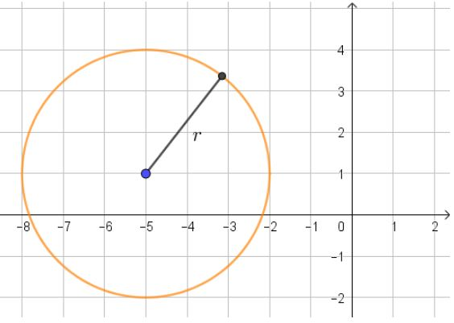

Aparte de la ecuación ordinaria, hay otra manera usual de escribir una circunferencia, llamada forma general. Considera la siguiente circunferencia.

Una circunferencia cuyo centro no es el origen.
Podemos apreciar que su centro está en el punto \(-5,1)\) y que su radio es de tres unidades, por lo cual, su ecuación ordinaria será
\[{3^2} = {\left( {x - \left[ { - 5} \right]} \right)^2} + {\left( {y - 1} \right)^2}\]
Simplificando
\[9 = {\left( {x + 5} \right)^2} + {\left( {y - 1} \right)^2}\]
Ahora desarrollaremos los binomios al cuadrado recordando que en general \({\left( {a + b} \right)^2} = {a^2} + 2ab + {b^2}\) y \({\left( {a - b} \right)^2} = {a^2} - 2ab + {b^2}\), de modo que
\[9 = {x^2} + 10x + 25 + {y^2} - 2y + 1\]
Igualamos a cero y simplificamos con lo cual obtenemos la forma general de la ecuación de esta circunferencia
\[0 = {x^2} + {y^2} + 10x - 2y + 17\]
Si recuerdas, una ecuación se puede multiplicar en ambos lados por la misma cantidad y no se altera, entonces podemos multiplicar ambos lados del resultado anterior por cualquier número, por ejemplo 3, y obtendríamos
\[0 = 3{x^2} + 3{y^2} + 30x - 6y + 51\]
¡Lo cual también sería la ecuación general de la circunferencia anterior!
En la ecuación general de la circunferencia ¿qué puedes observar de los coeficientes de los términos cuadráticos?